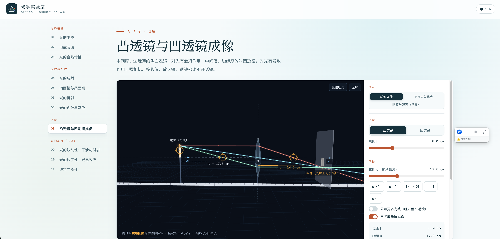

FIELD / Physics
物理学
Physics从受力与运动、简单机械、电与磁，到光的传播、反射、折射与成像。
AVAILABLE LESSONS / 04
选择一个演示，开始探索
点击卡片即可直接打开演示。
 LESSON / 01
LESSON / 01牛顿车库
Newton's Garage切换运动状态、调节质量与驱动力，完成五章互动实验与课堂挑战。
3D 汽车 · 双语 · 五章实验直接进入演示 LESSON / 02简单机械 3D 实验室
Simple Machines 3D Lab操作杠杆、滑轮、轮轴、斜面、螺旋与楔子，调节参数并观察示意受力。
6 个章节 · 3D 操作 · 中英双语直接进入演示 LESSON / 03电与磁 3D 实验室
Electricity & Magnetism 3D Lab通过 13 个互动章节观察电磁现象，搭建电路并调节实验参数。
13 个章节 · 3D 操作 · 中英双语直接进入演示
LESSON / 04光学实验室
Optics Lab通过 11 个互动章节观察光的性质，探索反射、折射、透镜成像、干涉衍射与光电效应。
11 个互动章节 · 3D 光路实验 · 中英双语直接进入演示